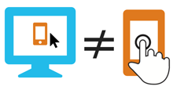
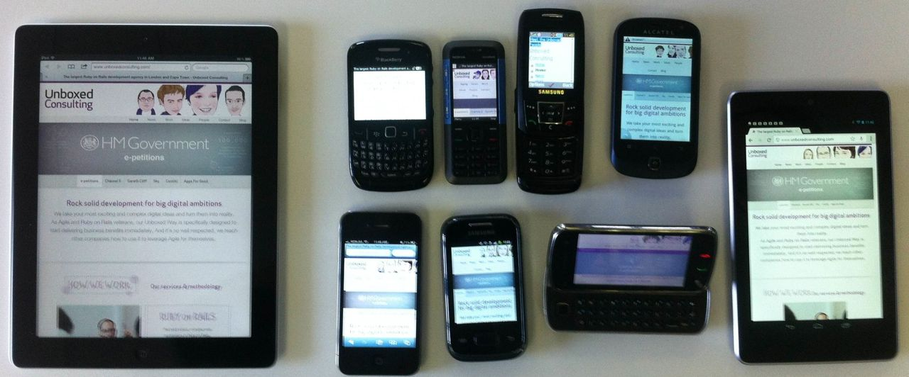

Why test on actual devices?
Testing on real devices gives the clearest picture of how the site will work “in the wild.” It allows for testing in a way that’s closest to how real users will interact with the site. The most important benefits of using real devices are the physical characteristics of devices:
- input methods such as fingers on a touch screen rather (are link targets big enough?);
- the weight, size, form factor, and portability of a device (is the text well-sized with the screen up close?);
- the quality and condition of the hardware (how well does the site work if the touch screen is not very responsive, is cracked, or dirty?);
- capabilities: touch, GPS, accelerometer, etc. (can we use the device’s extra capabilities to add extra value for the user?)
More realistic testing isn’t the only benefit of using real devices. You learn more each time you use them, and become more efficient by knowing what to look out for next time. Exposure to more platforms and design approaches, Operating Systems, and browsers is also beneficial. It serves as a reminder of the wide range of use cases and that the site needs to be as lean and robust as possible to survive in whatever environment it is used in.
Testing on emulators can be useful, and is certainly better than not testing for mobile at all, but is not as good as testing on real devices. Emulators are essentially ports of an Operating System / browser, so there is the chance of errors or differences in performance and behaviour. They also add another layer of abstraction from the experience that the user has, and another potential place for bugs to occur. They can be a good first test of layout, but can’t replicate a real user experience.

It would be impossible to test your site on every device that exists today, and the range and variation is only increasing. Testing on as many devices as possible can quickly become impractical. A pragmatic approach is to test on a representative sample of devices, covering as broad a range as possible.
The focus of development should be on long term functional support for as many devices as possible, followed by optimisation for higher-end devices. Achieving perfection for specific devices or platforms will only be a short term success: the quantity, quality, and variety of internet-enabled devices is increasing at a remarkable pace.
The devices in the lab are selected using high-level device categories: the specific devices in the lab aren’t as important as the categories that each belongs to. Some of the categories used are:
- Operating system and installable browsers
- Screen size, resolution, and ppi
- Inputs method (touchscreen, touchpad, QWERTY keyboard, dpad)
- form factor (shape, size)
- hardware quality
- manufacturer

Below is a list of devices currently in the lab, and a short description of why they’re included. View the list in JSON format, or grab the JSON template.
-
Apple iPad 3
Popular Apple iOS tablet, with large 10 inch screen, high dpi, and a wide range of available browsers.
-
Apple iPhone 5
Recent Apple iOS smartphone, high dpi 4 inch screen, widescreen aspect ratio.
-
Amazon Kindle keyboard
Popular e-reader with low capability browser and 16-level grayscale e-ink display. Oddball, good for being Future Friendly!
-
Nintendo Wii
Gaming console running Opera 9 browser. Hooked up to projector.
-
Apple iPhone 3
Older Apple iOS smartphone, 3.5 inch, becoming popular as a cheap iOS device.
-
Alcatel One Touch
Mid range smartphone with older Android version (2.2 Froyo).
-
Nokia N97
Mid range Symbian smartphone from manufacturer popular in Africa, with touchscreen and widescreen aspect ratio.
-
Samsung E250
Low end featurephone, very popular in South Africa.
-
Blackberry Curve 8520
Older Blackberry (OS 5) with landscape screen, and touchpad / QWERTY input.
-
ZTE X990
Low end, cheap, featurephone. WAP only.
-
Samsung Galaxy Ace
Mid range smartphone with older Android version (2.3.3 Gingerbread)
-
Nokia 5310 XpressMusic
Mid range feature phone from manufacturer popular in Africa, on Series 40 OS, dpad and keypad input, running Opera Mini proxy browser.
-
Google Nexus 7
Mid range tablet with Latest version of Android (4.1 Jelly Bean) and mid-size screen.
-
Samsung Galaxy Pocket
Low end smartphone from leading manufacturer, with most popular Android version (2.3 Gingerbread).
The differences in operating systems and inputs can be a little overwhelming, so I've put together some reference documentation for the devices detailing browser locations, Wi-Fi settings, and quirks.
There are also tables for at-a-glance comparisons of the devices in the lab.
For now, testing is done via WiFi internet connections. Testing on cellular networks would be ideal, but isn't financially possible at the moment. If you have SIM cards that you'd like to use for testing purposes, please feel free to bring them along.
Would you like to host the lab for a session?
get in touch
A work-in-progress checklist is available at naga.co.za/checklist-and-tools.
It contains things to look out for under the following topics:
- HTML, CSS, and JavaScript.
- UX, Accessibilty.
- Mobile-specific concerns.
- WordPress-specific concerns.
- A list of tools: validators, performance measurers, reference documentation and resources.
The mobile section covers some ideas for things to test for during a lab session.